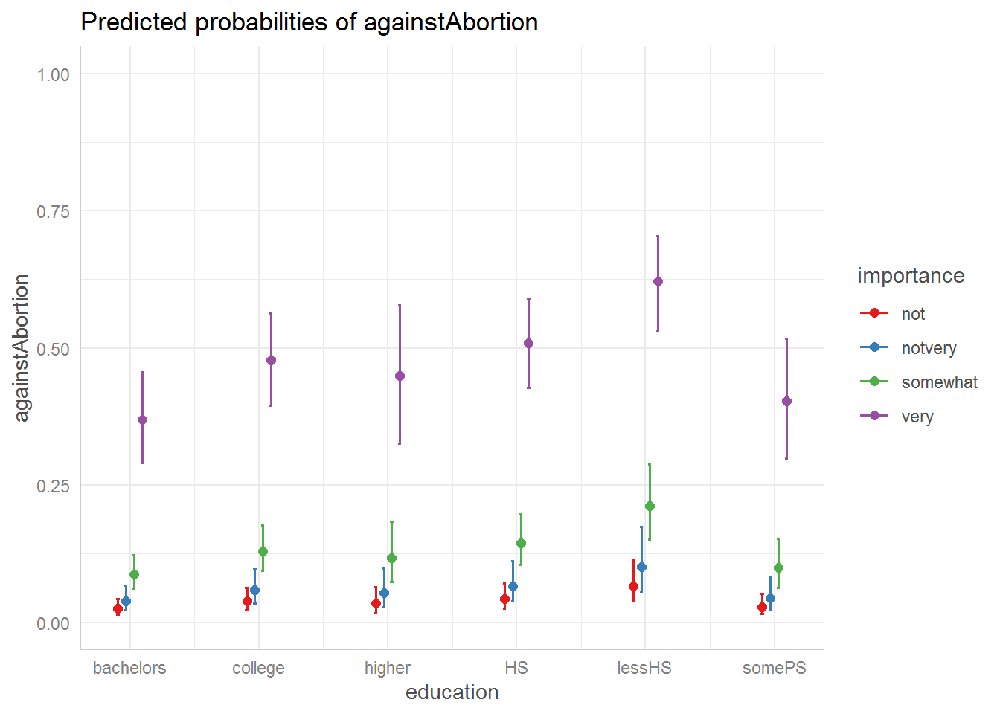
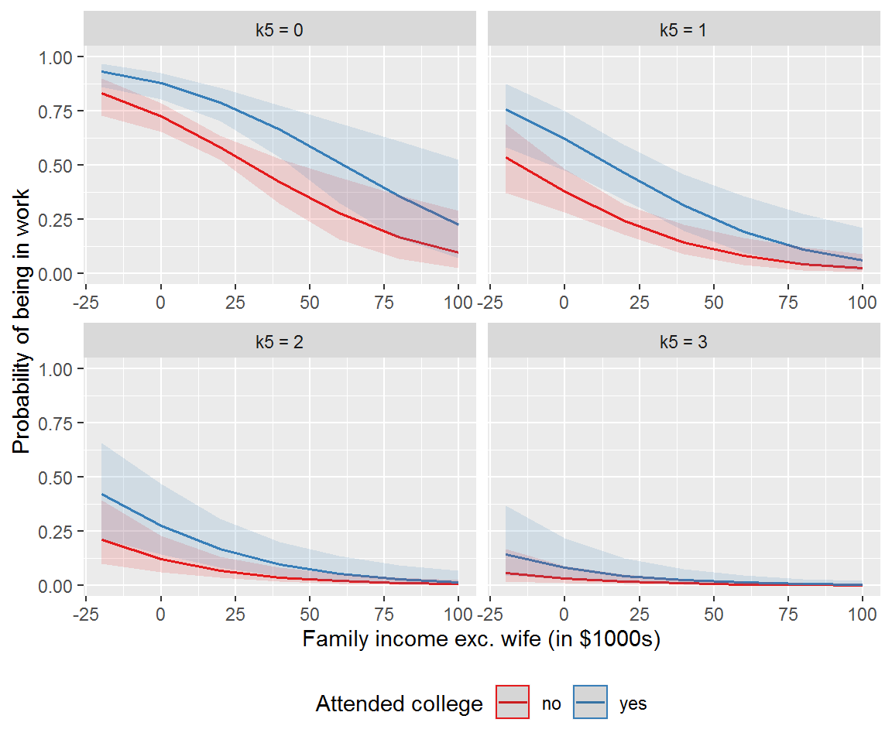

Chapter 9 Complex surveys
By the end of this chapter you will know how to:
- Setup a survey object using complex survey information such as sampling weight and stratification variables.
- Use a tidyverse-esq approach for descriptive statistics.
- Fit a GLM (logistic).
We will use the survey package and a tidyverse-style wrapper called srvyr.
library(survey)
library(srvyr)9.1 Readings
These are handy:
srvyrcompared to thesurveypackage explains a way to use survey data in the tidyverse.- Fox and Weisberg’s online appendix, Fitting Regression Models to Data From Complex Surveys.
- The main reference for the models implemented by
surveyis the (expensive) book by Lumley (2010). - UCLA has extensive notes from a 2020 seminar on survey analysis.
- Analyzing international survey data with the pewmethods R package, by Kat Devlin, explains an alternative way to use weights for descriptive stats.
9.2 The dataset
This chapter’s dataset is drawn from the 2011 Canadian National Election Study – taken from the carData package and described by the Fox and Weisberg appendix cited above. Download it here.
There are 2231 observations on the following 9 variables:
| Variable name | Description |
|---|---|
| id | Household ID number. |
| province | a factor with (alphabetical) levels AB, BC, MB, NB, NL, NS, ON, PE, QC, SK; the sample was stratified by province. |
| population | population of the respondent’s province, number over age 17. |
| weight | weight sample to size of population, taking into account unequal sampling probabilities by province and household size. |
| gender | a factor with levels Female, Male. |
| abortion | attitude toward abortion, a factor with levels No, Yes; answer to the question “Should abortion be banned?” |
| importance | importance of religion, a factor with (alphabetical) levels not, notvery, somewhat, very; answer to the question, “In your life, would you say that religion is very important, somewhat important, not very important, or not important at all?” |
| education | a factor with (alphabetical) levels bachelors (Bachelors degree), college (community college or technical school), higher (graduate degree), HS (high-school graduate), lessHS (less than high-school graduate), somePS (some post-secondary). |
| urban | place of residence, a factor with levels rural, urban. |
Read in the data.
ces <- read.csv("ces11.csv", stringsAsFactors = TRUE)I’m setting stringsAsFactors to TRUE so that the variables which are obviously factors are setup accordingly (R used to this by default; sometimes it had irritating side-effects).
9.3 The components of a survey design
The key parts of the dataset which describe the survey design are as follows:
ces %>% select(id, province, population, weight) %>%
head(6)## id province population weight
## 1 2851 BC 3267345 4287.85
## 2 521 QC 5996930 9230.78
## 3 2118 QC 5996930 6153.85
## 4 1815 NL 406455 3430.00
## 5 1799 ON 9439960 8977.61
## 6 1103 ON 9439960 8977.61idis a unique identifier for each individual, which is particularly important when there is more than one data point per person, e.g., for multilevel modelling (not in this dataset).provincethe data were stratified by province – random sampling by landline numbers was done within province.populationprovides the population by province.weightis the sampling weight, in this dataset calculated based on differences in province population, the study sample size therein, and household size.
Here is how to setup a survey object using srvyr:
ces_s <- ces %>%
as_survey(ids = id,
strata = province,
fpc = population,
weights = weight)9.4 Describing the data
We will sometimes want to compare weighted and unweighted analyses. Here is a warmup activity to show how using the tidyverse.
9.4.1 Activity
- use the
cesdata frame andtidyverseto calculate the number of people who think abortion should be banned - do the same again, but this time use the
ces_ssurvey object created above – what do you notice? - compare the proportions saying
yesby group
Hint: you will want to use group_by.
Another hint: to count, use the function n. The version for survey objects is called survey_total.
9.4.2 Answer
a. use the ces data frame and tidyverse to calculate the number of people who think abortion should be banned
ces %>%
group_by(abortion) %>%
summarise(n = n())## `summarise()` ungrouping output (override with `.groups` argument)## # A tibble: 2 x 2
## abortion n
## <fct> <int>
## 1 No 1818
## 2 Yes 413b. do the same again, but this time use the ces_s survey object created above – what do you notice?
ces_s %>%
group_by(abortion) %>%
summarise(n = survey_total())## # A tibble: 2 x 3
## abortion n n_se
## <fct> <dbl> <dbl>
## 1 No 13059520. 196984.
## 2 Yes 2964018. 162360.The counts are much bigger than the number of rows in the dataset due to the sampling weights.
c. compare the proportions saying yes by group
One way to do this is by copy and paste!
Unweighted:
prop_unweighted <- 413 / (413 + 1818)
prop_unweighted## [1] 0.1851188Weighted:
prop_weighted <- 2964018 / (2964018 + 13059520)
prop_weighted## [1] 0.184979The unweighted proportion of “yes” is only a little different in this case: 0.1851188 (unweighted) v 0.184979 (weighted).
Here’s how to answer the questions in one go:
ces_s %>%
group_by(abortion) %>%
summarise(n_raw = unweighted(n()),
n_weighted = survey_total()) %>%
mutate(prop_raw = n_raw / sum(n_raw),
prop_weighted = n_weighted / sum(n_weighted)) %>%
select(-n_weighted_se)## # A tibble: 2 x 5
## abortion n_raw n_weighted prop_raw prop_weighted
## <fct> <int> <dbl> <dbl> <dbl>
## 1 No 1818 13059520. 0.815 0.815
## 2 Yes 413 2964018. 0.185 0.1859.5 Fitting a GLM
The survey package makes this very easy. There is a command called svyglm which is identical to glm except it has parameter called design instead of data.
See ?svyglm
9.5.1 Activity
mutatethe survey object to add a binary variable calledagainstAbortionwhich is 1 if the participant is against abortion and 0 if not.- fit an intercept-only logistic regression model without using weights (you can use
as_tibbleto get the “raw” data frame hidden within the survey object). - Do the same again, this time using the survey structure.
- compare the predicted proportions with the “raw” proportions we calculated earlier
9.5.2 Answer
a. mutate the survey object to add a binary variable called againstAbortion which is 1 if the participant is against abortion and 0 if not.
ces_s <- ces_s %>%
mutate(againstAbortion = as.numeric(ces$abortion == "Yes"))b. fit an intercept-only logistic regression model without using weights (you can use as_tibble to get the “raw” data frame hidden within the survey object).
m0 <- glm(againstAbortion ~ 1,
data = as_tibble(ces_s),
family = binomial)
summary(m0)##
## Call:
## glm(formula = againstAbortion ~ 1, family = binomial, data = as_tibble(ces_s))
##
## Deviance Residuals:
## Min 1Q Median 3Q Max
## -0.6399 -0.6399 -0.6399 -0.6399 1.8367
##
## Coefficients:
## Estimate Std. Error z value Pr(>|z|)
## (Intercept) -1.48204 0.05451 -27.19 <2e-16 ***
## ---
## Signif. codes: 0 '***' 0.001 '**' 0.01 '*' 0.05 '.' 0.1 ' ' 1
##
## (Dispersion parameter for binomial family taken to be 1)
##
## Null deviance: 2137.6 on 2230 degrees of freedom
## Residual deviance: 2137.6 on 2230 degrees of freedom
## AIC: 2139.6
##
## Number of Fisher Scoring iterations: 4c. Do the same again, this time using the survey structure.
sm0 <- svyglm(againstAbortion ~ 1, design = ces_s,
family = binomial)## Warning in eval(family$initialize): non-integer #successes in a binomial glm!summary(sm0)##
## Call:
## svyglm(formula = againstAbortion ~ 1, design = ces_s, family = binomial)
##
## Survey design:
## Called via srvyr
##
## Coefficients:
## Estimate Std. Error t value Pr(>|t|)
## (Intercept) -1.48297 0.06534 -22.7 <2e-16 ***
## ---
## Signif. codes: 0 '***' 0.001 '**' 0.01 '*' 0.05 '.' 0.1 ' ' 1
##
## (Dispersion parameter for binomial family taken to be 1.000448)
##
## Number of Fisher Scoring iterations: 4d. compare the predicted proportions with the “raw” proportions we calculated earlier
This undoes the log-odds (logit) transform:
exp(coef(m0)) / (1+exp(coef(m0)))## (Intercept)
## 0.1851188exp(coef(sm0)) / (1+exp(coef(sm0)))## (Intercept)
## 0.184979The answer is the same as for the simple unweighted and weighted proportions, respectively.
9.6 Slopes
Now, having completed the traditional step of fitting an intercept-only model, we can give the slopes a go.
The Anova command in the car package works for svyglm models as before.
9.6.1 Activity
Regress againstAbortion on importance, education, and gender, and interpret what you find.
9.6.2 Answer
sm1 <- svyglm(againstAbortion ~ importance + education + gender,
design = ces_s,
family = binomial)## Warning in eval(family$initialize): non-integer #successes in a binomial glm!summary(sm1)##
## Call:
## svyglm(formula = againstAbortion ~ importance + education + gender,
## design = ces_s, family = binomial)
##
## Survey design:
## Called via srvyr
##
## Coefficients:
## Estimate Std. Error t value Pr(>|t|)
## (Intercept) -3.8204 0.2962 -12.897 < 2e-16 ***
## importancenotvery 0.4606 0.3481 1.323 0.1858
## importancesomewhat 1.3287 0.2715 4.894 1.06e-06 ***
## importancevery 3.1405 0.2619 11.993 < 2e-16 ***
## educationcollege 0.4452 0.2278 1.954 0.0508 .
## educationhigher 0.3301 0.3046 1.084 0.2786
## educationHS 0.5692 0.2269 2.508 0.0122 *
## educationlessHS 1.0307 0.2468 4.177 3.07e-05 ***
## educationsomePS 0.1439 0.2806 0.513 0.6081
## genderMale 0.3299 0.1482 2.225 0.0261 *
## ---
## Signif. codes: 0 '***' 0.001 '**' 0.01 '*' 0.05 '.' 0.1 ' ' 1
##
## (Dispersion parameter for binomial family taken to be 0.973961)
##
## Number of Fisher Scoring iterations: 5To interpret those categorical predictors, it will help to check what the levels are:
levels(ces$importance)## [1] "not" "notvery" "somewhat" "very"So “not” is the comparison level.
levels(ces$education) ## [1] "bachelors" "college" "higher" "HS" "lessHS" "somePS"“bachelors” is the comparison level.
Gender is just a binary.
Example interpretations:
Men were more likely to be against abortion (log-odds 0.33 more)
People for whom religion was very important were more likely than those who said “not important at all” to be against abortion (log-odds 3.14)
You could get the odds ratios like so:
exp(coef(sm1)) %>% round(2)## (Intercept) importancenotvery importancesomewhat importancevery
## 0.02 1.59 3.78 23.12
## educationcollege educationhigher educationHS educationlessHS
## 1.56 1.39 1.77 2.80
## educationsomePS genderMale
## 1.15 1.39So the odds ratio of “very” versus “not” important is 23.1.
The ggeffects package also works with survey models (hurrah):
library(ggeffects)
ggeffect(sm1, terms = c("education", "importance")) %>%
plot() +
ylim(0,1)
9.7 Diagnostics
Many of the diagnostic checks we previously encountered work here too.
Here are the VIFs:
vif(sm1)## GVIF Df GVIF^(1/(2*Df))
## importance 1.052799 3 1.008612
## education 1.066741 5 1.006482
## gender 1.039299 1 1.019460My favorite, the DFBETA plots:
dfbetaPlots(sm1)
Try also:
influence.measures(sm1)